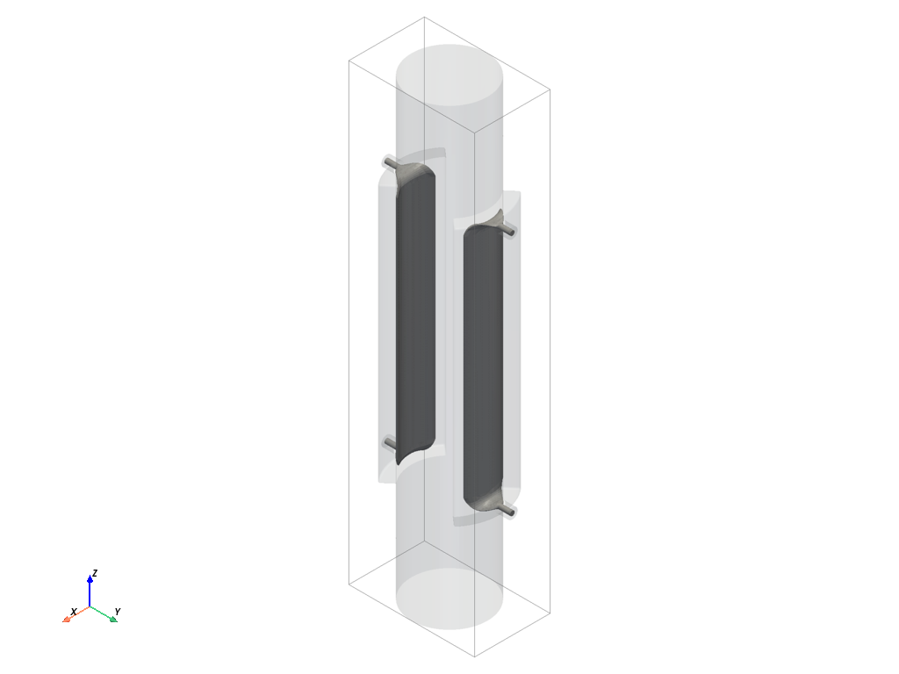
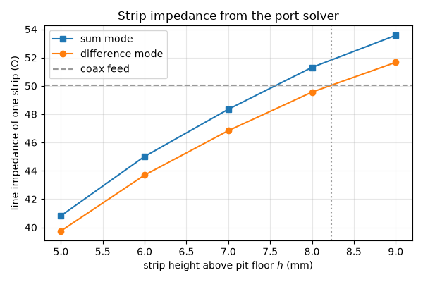
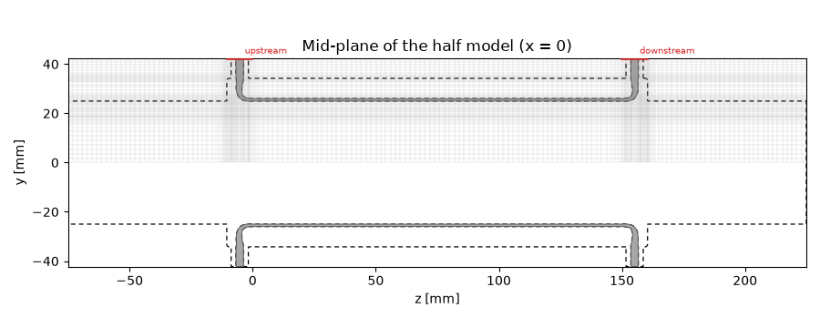
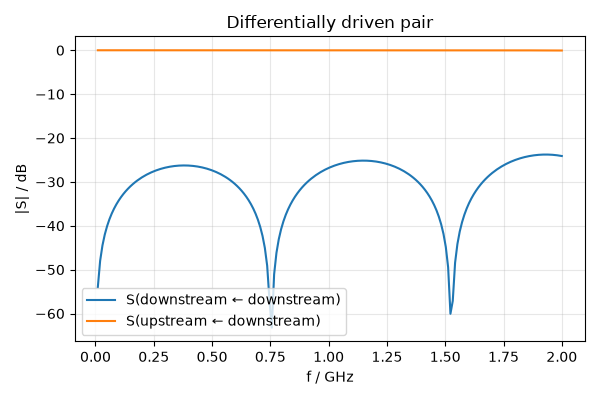
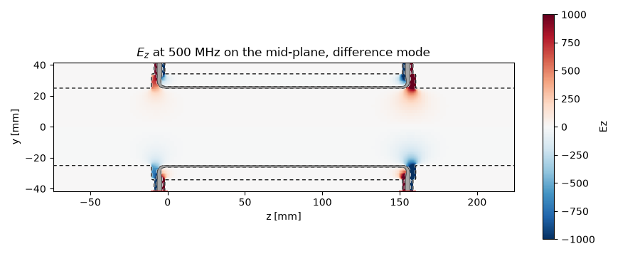
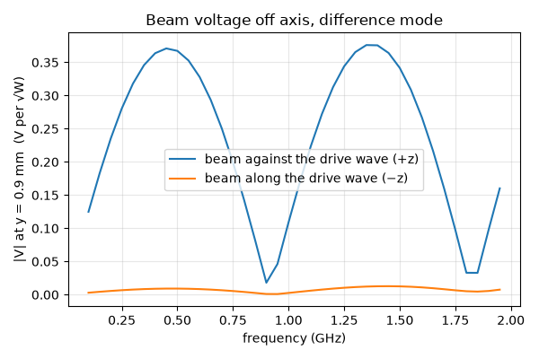
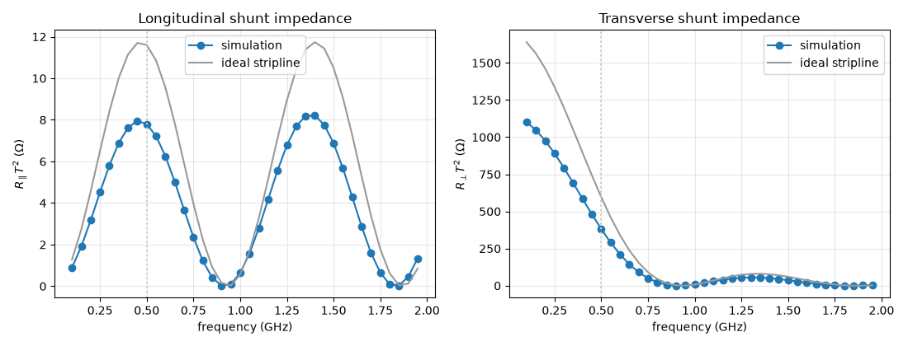
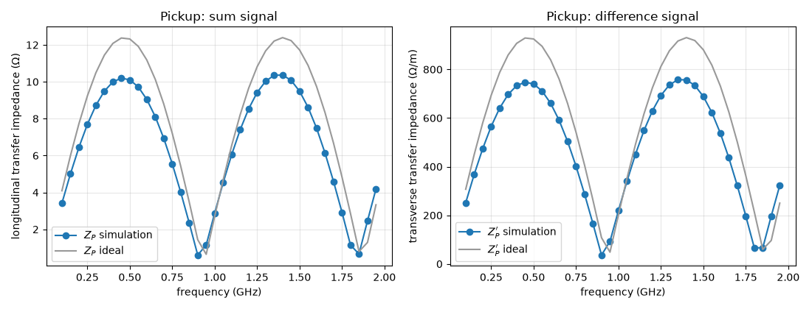

Note
Go to the end to download the full example code.
Striplines as pickups and kickers: beam-coupling figures from S-parameter runs#
A pair of stripline electrodes in a beam pipe is a workhorse of beam instrumentation: read out, it is a broadband pickup (a beam position monitor); driven, it is a kicker that deflects the beam. Neither role is an S-parameter — a port model has no beam — yet both follow from one S-parameter simulation. This guide walks the route used to design such devices (Goldberg and Lambertson, AIP Conf. Proc. 249, 537 (1992)):
simulate the device as a kicker: drive the ports, record the longitudinal electric field along the beam axis;
integrate that field with the particle’s own phase to get the beam voltage and the longitudinal kicker constant;
obtain the transverse kick from the transverse gradient of the longitudinal field of a push-pull drive — the Panofsky–Wenzel theorem;
turn kicker constants into the pickup transfer impedances by the Lorentz reciprocity theorem.
On the way, the difference and sum modes of the electrode pair are excited with a single port each by choosing the symmetry plane between them, and the line impedance of one strip is dimensioned with the port solver alone. The ideal-stripline formulas of the primer serve as the reference.
The device#
Two strips of angular coverage \(\varphi\) face each other across a round beam pipe of radius \(b\). Each strip sits in a recess (a pit) of the pipe wall, a distance \(h\) above the pit floor; the pit floor and side walls are the strip’s ground, and the pit is wide enough that the strip edges see a gap to the side walls. Each strip end is taken out through a 50 Ω air-filled coaxial feed, so the pair has four ports; the feed sits a little beyond the strip end and the pit reaches a little beyond the feed. A short piece of plain beam pipe continues on either side.
The one number that makes the device a stripline rather than a pair of buttons is its length: the two ends of a strip respond with opposite sign, and for a beam travelling at the speed of light the two contributions add in phase when the strip is a quarter wavelength long. With the design frequency at 500 MHz the strip is 150 mm long.
quantity |
value |
|---|---|
beam pipe radius \(b\) |
25 mm |
strip coverage angle \(\varphi\) |
60° |
strip length \(l = c/4f_0\) |
149.9 mm |
strip thickness |
1 mm |
pit side gap (strip edge to pit wall) |
5 mm |
strip height above pit floor \(h\) |
to be found |
coax inner / outer radius |
1.52 / 3.50 mm |
feed offset beyond the strip end |
1.5 × 3.5 mm |
pit end beyond the strip end |
3 × 3.5 mm |
The strip height \(h\) is left open on purpose: it sets the line impedance of the strip, and the strip should match its 50 Ω feeds.
import math
import matplotlib.pyplot as plt
import numpy as np
import magnelio as mio
from magnelio import geo, monitors, ports
from magnelio.constants import C0
F0 = 0.5e9
F_MAX = 2.0e9
B = 25e-3
PHI_DEG = 60.0
PHI = math.radians(PHI_DEG)
L = C0 / (4 * F0)
T = 1e-3
GAP = 5e-3
R_IN, R_OUT, L_COAX = 1.52e-3, 3.5e-3, 8e-3
G_FEED = 1.5 * R_OUT
G_PIT = 3.0 * R_OUT
L_PIPE = 3.0 * B
Z_COAX_DESIGN = 60.0 * math.log(R_OUT / R_IN)
print(f"strip length {L * 1e3:.1f} mm, coax {Z_COAX_DESIGN:.1f} ohm")
def build_coupler(h):
"""The electrode pair in its pipe: [vacuum body, electrode body] for strip height h."""
pit_deg = PHI_DEG + math.degrees(2 * GAP / B)
r_pit = B + T + h
y_top = r_pit + L_COAX
vacuum = geo.Cylinder(
radius=B, origin=(0, 0, -L_PIPE), axis="z", height=L + 2 * L_PIPE, material="air"
)
pit = (
geo.Face(
normal="x",
points=((0, -G_PIT), (0, L + G_PIT), (r_pit, L + G_PIT), (r_pit, -G_PIT)),
material="pec",
)
.revolved(axis="z", angle_deg=pit_deg)
.rotated(axis="z", angle_deg=-pit_deg / 2)
.filleted(edges="all", radius=1e-3)
)
coax = geo.Cylinder(
origin=(0, 0, -G_FEED), axis="y", height=y_top, radius=R_OUT, material="air"
)
pin = geo.Cylinder(
origin=(0, r_pit, -G_FEED), axis="y", height=L_COAX, radius=R_IN, material="pec"
)
strip = (
geo.Face(normal="x", points=((B, 0), (B, L), (B + T, L), (B + T, 0)), material="pec")
.revolved(axis="z", angle_deg=PHI_DEG)
.rotated(axis="z", angle_deg=-PHI_DEG / 2)
)
# The strip end bends up into the coax pin: a tangent-blended loft.
feed = strip.lofted(
(0, B + T / 2, 0),
pin,
(0, r_pit, -G_FEED),
material="pec",
blend="tangent",
tension=(0.8, 0.2),
)
far = dict(normal=(0, 0, 1), position=L / 2)
vacuum = vacuum + pit + coax + coax.mirrored(**far)
electrode = strip + feed + feed.mirrored(**far) + pin + pin.mirrored(**far)
# The second strip is the first one turned half a revolution.
vacuum = vacuum + vacuum.rotated(axis="z", angle_deg=180)
electrode = electrode + electrode.rotated(axis="z", angle_deg=180)
return [vacuum - electrode, electrode]
strip length 149.9 mm, coax 50.0 ohm
A geometry of this complexity — revolved faces, lofts, mirrors and a half-turn copy — is best assembled in a notebook, where every intermediate body can be looked at in the interactive 3D view before the next operation builds on it. The assembled device, at a provisional strip height (the port solver settles the real one below):
model = mio.GeometryModel(background="pec")
for body in build_coupler(7.5e-3):
model.add(body)
model.plot()

Dimensioning the strip with the port solver#
The strip and its pit form a TEM line, and the port solver computes the line impedance of any cross-section handed to it. A slice of the device around its mid-plane, ten millimetres long, with a port on the slice face is enough — no time-domain run is needed. The loop below does this for a few strip heights.
Two strips are two coupled lines, and a coupled pair has two modes: the sum mode (both strips at the same potential) and the difference mode (opposite potentials), each with its own line impedance. The plane between the strips is a mirror plane of the cross-section, and the two modes are the two wall types on it: the sum mode has no normal electric field there (a magnetic wall, PMC), the difference mode no tangential field (an electric wall, PEC). Declaring the plane as a symmetry boundary (tutorial 09) therefore selects the mode, and the half-model port solves one strip.
The port report quotes the impedance of the full model, i.e. of the pair as the symmetry plane combines it: in the sum mode the two strips act in parallel (half the impedance of one strip), in the difference mode in series (twice the impedance of one strip). The strip’s own impedance is recovered below with the matching factor. A second symmetry plane, the one through both strips, cuts the model once more without changing the mode.
FAR = 10.0 # a "large" coordinate for half-open boxes
def strip_impedance(h, mode):
"""Line impedance of one strip in the sum ("PMC") or difference ("PEC") mode."""
model = mio.GeometryModel(
background="pec", boundary_conditions={"xmin": "SymmetryPMC", "ymin": "Symmetry" + mode}
)
box = geo.Brick.from_ranges(x1=-FAR, x2=FAR, y1=-FAR, y2=FAR, z1=L / 2, z2=L / 2 + 10e-3)
for body in build_coupler(h):
model.add(geo.Intersection(body, box))
model.add_port(
ports.PortWaveguide(
name="strip", plane="zmin", corners=((-FAR, 0, None), (FAR, FAR, None)), n_modes=1
)
)
mesh = mio.Mesh.from_geometry(
model, mio.MeshControl(min_cell_size=T / 2, max_cell_size=1e-3), f_max=F_MAX
)
report = mio.AnalysisScatteringTD(mesh=mesh, verbose=False).solve_ports()
z_pair = report["strip"].z_line_num
return 2.0 * z_pair if mode == "PMC" else 0.5 * z_pair
heights = np.array([5.0, 6.0, 7.0, 8.0, 9.0]) * 1e-3
z_sum = np.array([strip_impedance(h, "PMC") for h in heights])
z_diff = np.array([strip_impedance(h, "PEC") for h in heights])
for h, zs, zd in zip(heights, z_sum, z_diff):
print(f"h = {h * 1e3:.0f} mm: Z_strip = {zs:5.1f} ohm (sum) {zd:5.1f} ohm (difference)")
H = float(np.interp(Z_COAX_DESIGN, z_diff, heights))
print(f"strip height for a {Z_COAX_DESIGN:.0f} ohm strip in the difference mode: {H * 1e3:.2f} mm")
fig, ax = plt.subplots(figsize=(6.0, 4.0))
ax.plot(heights * 1e3, z_sum, "s-", label="sum mode")
ax.plot(heights * 1e3, z_diff, "o-", label="difference mode")
ax.axhline(Z_COAX_DESIGN, color="0.6", ls="--", label="coax feed")
ax.axvline(H * 1e3, color="0.6", ls=":")
ax.set_xlabel("strip height above pit floor $h$ (mm)")
ax.set_ylabel("line impedance of one strip (Ω)")
ax.set_title("Strip impedance from the port solver")
ax.grid(alpha=0.3)
ax.legend()
fig.tight_layout()

UserWarning: 6 geometry-edge planes (3 on x, 3 on y) below the edge floor 0.00187 m (h_max / max_edge_refinement = 0.00749 m / 4) dropped. The coarsest, at y = 0.0239035 m, would create a 0.0011 m cell: the feature there — a chamfer, fillet or section curve — is below the grid and has no effect on the result until it spans half a cell; MeshControl(max_edge_refinement=6.9) keeps it, or refine the mesh.
UserWarning: 6 geometry-edge planes (3 on x, 3 on y) below the edge floor 0.00187 m (h_max / max_edge_refinement = 0.00749 m / 4) dropped. The coarsest, at y = 0.0232202 m, would create a 0.00157 m cell: the feature there — a chamfer, fillet or section curve — is below the grid and has no effect on the result until it spans half a cell; MeshControl(max_edge_refinement=4.8) keeps it, or refine the mesh.
UserWarning: 6 geometry-edge planes (3 on x, 3 on y) below the edge floor 0.00187 m (h_max / max_edge_refinement = 0.00749 m / 4) dropped. The coarsest, at y = 0.02397 m, would create a 0.00103 m cell: the feature there — a chamfer, fillet or section curve — is below the grid and has no effect on the result until it spans half a cell; MeshControl(max_edge_refinement=7.3) keeps it, or refine the mesh.
UserWarning: 6 geometry-edge planes (3 on x, 3 on y) below the edge floor 0.00187 m (h_max / max_edge_refinement = 0.00749 m / 4) dropped. The coarsest, at y = 0.0225167 m, would create a 0.000866 m cell: the feature there — a chamfer, fillet or section curve — is below the grid and has no effect on the result until it spans half a cell; MeshControl(max_edge_refinement=8.7) keeps it, or refine the mesh.
UserWarning: 6 geometry-edge planes (3 on x, 3 on y) below the edge floor 0.00187 m (h_max / max_edge_refinement = 0.00749 m / 4) dropped. The coarsest, at y = 0.0269002 m, would create a 0.0009 m cell: the feature there — a chamfer, fillet or section curve — is below the grid and has no effect on the result until it spans half a cell; MeshControl(max_edge_refinement=8.4) keeps it, or refine the mesh.
h = 5 mm: Z_strip = 40.8 ohm (sum) 39.7 ohm (difference)
h = 6 mm: Z_strip = 45.0 ohm (sum) 43.7 ohm (difference)
h = 7 mm: Z_strip = 48.4 ohm (sum) 46.8 ohm (difference)
h = 8 mm: Z_strip = 51.3 ohm (sum) 49.6 ohm (difference)
h = 9 mm: Z_strip = 53.6 ohm (sum) 51.7 ohm (difference)
strip height for a 50 ohm strip in the difference mode: 8.23 mm
The two modes differ by a few percent: the strips are shielded from each other by the pipe wall and only couple through the aperture. The difference mode is the one a transverse kicker or a position pickup works in, so \(h\) is set for 50 Ω there. The strip impedances for the design follow, together with the mode itself:
Z_SUM = strip_impedance(H, "PMC")
Z_DIFF = strip_impedance(H, "PEC")
print(f"design: Z_strip = {Z_SUM:.1f} ohm (sum), {Z_DIFF:.1f} ohm (difference)")
design: Z_strip = 52.8 ohm (sum), 51.0 ohm (difference)
The kicker model#
The full device, with a port window on each coaxial feed. The symmetry plane between the strips again selects the mode, and it does one more thing: it drives both strips. With the electric wall in place, the mirror image of the excited port carries the opposite voltage — the two downstream ports are fed 180° apart, as they would be from a hybrid. One excited port in the half model is therefore a differentially driven pair, the configuration of a transverse kicker. The second symmetry plane, through the strips, halves the work once more and cuts each coaxial port window in two; the solver accounts for that and the declared power stays a full-model watt per port.
The run records the longitudinal field \(E_z\) along a line parallel to the beam axis, at every frequency of interest, plus a field picture on the mid-plane at the design frequency. Where that line sits matters: on the electric wall \(E_z\) vanishes, and the transverse analysis below needs its gradient — so the line is asked for close to the axis, and the monitor reports the cell centre it actually landed on.
FREQS = np.arange(0.1e9, F_MAX, 0.05e9)
def kicker_run(mode):
"""Drive the downstream port of the pair in the sum or difference mode."""
model = mio.GeometryModel(
background="pec", boundary_conditions={"xmin": "SymmetryPMC", "ymin": "Symmetry" + mode}
)
for body in build_coupler(H):
model.add(body)
r = 1.6 * R_OUT
for name, zc in (("upstream", -G_FEED), ("downstream", L + G_FEED)):
model.add_port(
ports.PortWaveguide(
name=name, plane="ymax", corners=((-r, None, zc - r), (r, None, zc + r)), n_modes=1
)
)
mesh = mio.Mesh.from_geometry(
model,
mio.MeshControl(min_cells_per_feature=8, min_cell_size=T / 4, max_cell_size=2e-3),
f_max=F_MAX,
)
line = monitors.MonitorFieldFrequency(
freqs=FREQS, fields=["Ez"], corners=((0, 1e-3, -FAR), (0, 1e-3, FAR)), name="Ez_line"
)
plane = monitors.MonitorFieldFrequency(
freqs=[F0], fields=["E"], corners=((0, None, None), (0, None, None)), name="E_plane"
)
analysis = mio.AnalysisScatteringTD(mesh=mesh, monitors=[line, plane], verbose=False)
z_port = analysis.solve_ports()["downstream"].z_line_num
result = analysis.run(excited=["downstream"])
return model, mesh, result, line, plane, z_port
model, mesh, result, line, plane, Z_PORT = kicker_run("PEC")
print(f"grid: {mesh.Nx} x {mesh.Ny} x {mesh.Nz} cells")
print(f"coax port impedance on the grid: {Z_PORT:.1f} ohm")
print(f"field line recorded at y = {line.region.yc[0] * 1e3:.2f} mm, {len(line.region.zc)} points")
fig, ax = plt.subplots(figsize=(9.0, 3.6))
model.plot_cross_section(mesh=mesh, normal="x", position=0.0, flip=True, ax=ax)
ax.set_title("Mid-plane of the half model (x = 0)")
fig.tight_layout()

UserWarning: 10 geometry-edge planes (3 on x, 3 on y, 4 on z) below the edge floor 0.00187 m (h_max / max_edge_refinement = 0.00749 m / 4) dropped. The coarsest, at z = 0.149896 m, would create a 0.00175 m cell: the feature there — a chamfer, fillet or section curve — is below the grid and has no effect on the result until it spans half a cell; MeshControl(max_edge_refinement=4.3) keeps it, or refine the mesh.
grid: 46 x 56 x 209 cells
coax port impedance on the grid: 52.3 ohm
field line recorded at y = 0.90 mm, 209 points
The S-parameters say what a network analyser would: the feeds are matched, and the drive power leaves through the upstream port of the same strip — a stripline is a directional coupler, and a kicker’s upstream loads have to absorb the full drive power.
fig, ax = plt.subplots(figsize=(6.0, 4.0))
result.plot_s(("downstream", "downstream"), ("upstream", "downstream"), ax=ax)
ax.set_title("Differentially driven pair")
fig.tight_layout()

The field picture shows what the beam will see: the drive enters at the right, and the longitudinal field that does the kicking is concentrated at the two strip ends, where the strip voltage steps from its line value to the grounded pit. Along the strip itself the field is transverse — a TEM line has no \(E_z\).
fig, ax = plt.subplots(figsize=(9.0, 3.6))
plane.plot(
component="Ez", f=F0, plot_type="color", geometry=model, flip=True, vmin=-1e3, vmax=1e3, ax=ax
)
ax.set_title("$E_z$ at 500 MHz on the mid-plane, difference mode")
fig.tight_layout()

Beam voltage and kicker constant#
A particle of charge \(e\) and velocity \(\beta c\) crossing the device on a line parallel to the axis gains the energy \(eV\), with the beam voltage
The phase factor is the field’s own oscillation sampled along the particle’s path; its sign follows the phasor convention of the frequency monitors (tutorial 06) for a particle travelling toward \(+z\), and reverses for the opposite direction. The monitor data are fields per 1 W incident at the excited port, so \(V\) comes out per watt too. The kicker constant normalises it to the voltage at the kicker’s input terminal, \(V_K = \sqrt{2 Z_c P}\), where \(P\) is the total drive power — two watts here, one per strip — and \(Z_c\) the feed impedance as the grid sees it.
def beam_voltage(ez, z, f, beta=1.0, direction=+1):
"""Complex beam voltage V(f) for a particle moving along ±z at velocity beta·c."""
k_b = 2 * np.pi * f / (beta * C0)
return np.trapezoid(ez * np.exp(-1j * direction * k_b[:, None] * z[None, :]), z, axis=1)
P_IN = 2.0
V_K = math.sqrt(2 * Z_PORT * P_IN)
z_line = line.region.zc
y_line = line.region.yc[0]
ez_diff = line.data["Ez"]
v_forward = beam_voltage(ez_diff, z_line, FREQS, direction=+1)
v_backward = beam_voltage(ez_diff, z_line, FREQS, direction=-1)
fig, ax = plt.subplots(figsize=(6.0, 4.0))
ax.plot(FREQS / 1e9, np.abs(v_forward), label="beam against the drive wave (+z)")
ax.plot(FREQS / 1e9, np.abs(v_backward), label="beam along the drive wave (−z)")
ax.set_xlabel("frequency (GHz)")
ax.set_ylabel(f"|V| at y = {y_line * 1e3:.1f} mm (V per √W)")
ax.set_title("Beam voltage off axis, difference mode")
ax.grid(alpha=0.3)
ax.legend()
fig.tight_layout()

The two directions are not equivalent. A particle running against the drive wave collects the kicks of both strip ends in phase at the design frequency; one running with the wave, at the wave’s own speed, sees the second end cancel the first — the same directivity the S-parameters showed from the port side. A stripline kicker is therefore fed from its downstream end, and a stripline pickup is read out upstream. The lobes repeat: the third harmonic of the design frequency is the next maximum.
Transverse kick: the Panofsky–Wenzel theorem#
In the difference mode \(E_z\) is odd across the symmetry plane and vanishes on the axis — the beam voltage at the axis is zero, and there is no energy change. There is a deflection: the Panofsky–Wenzel theorem (Panofsky and Wenzel, Rev. Sci. Instrum. 27, 967 (1956)) states that the transverse momentum kick is the transverse gradient of the longitudinal beam voltage,
and its simple consequence for a kicker is that a transverse kicker needs a longitudinal field with a transverse gradient — which is what the difference mode provides. With the gradient taken from the recorded line (the field is zero on the electric wall, so one line gives the secant from the axis), the transverse kicker constant and the transverse shunt impedance follow (Goldberg and Lambertson, eqs. 4.7 and 4.11):
\(K_\perp\) is the transverse momentum, in voltage units \(\beta c\, \Delta p_\perp / e\), per volt at the terminal; \(R_\perp T^2\) relates that to the drive power. Note the \(1/k_B\): at a fixed longitudinal field, a transverse kicker gets weaker with frequency.
Longitudinal quantities: the sum mode#
The same run with the magnetic wall drives both strips in phase. Now \(E_z\) is even across the plane, the beam voltage on the axis is the quantity of interest, and the longitudinal kicker constant and shunt impedance are (eqs. 4.1 and 4.10)
The ideal stripline as the reference#
For a stripline whose end gaps are short, the primer gives the kicker constants in closed form. A strip driven at voltage \(V_L\) leaves a beam voltage of \(\pm g V_L\) at each end, the two ends \(l\) apart, and the sum of the two with the particle’s phase is \(2 g V_L \sin\theta\) with
where \(k_L = \omega/c\) is the wave number on the (air-filled) strip. The coverage factor \(g\) is the fraction of the strip voltage that reaches the beam — an electrostatic quantity of the cross-section. For strips of angle \(\varphi\) on a round pipe, the pair at equal potential gives \(g_\parallel = \varphi/\pi\) on the axis; at opposite potentials the potential on the axis is zero and grows linearly with the offset, \(g_\perp(y) = \frac{4}{\pi}\sin\frac{\varphi}{2}\,\frac{y}{b}\). Feeding the pair through a matched splitter from \(Z_c\) sets \(V_L / V_K = \sqrt{Z_L / 2 Z_c}\), and the kicker constants become
The shunt impedances \(Z_c |K|^2\) then no longer contain \(Z_c\) at all: they are properties of the electrodes (eqs. 8.11 and 8.17 of the primer). One choice remains — what is \(l\) for the real device? The field picture above answers it: the kicks happen where the strip meets its feed, so the electrical length is the distance between the two feeds, not the strip’s own length.
L_ELECTRIC = L + 2 * G_FEED
k_l = 2 * np.pi * FREQS / C0
theta = 0.5 * (k_l + k_b) * L_ELECTRIC
g_par = PHI / math.pi
g_perp = 4 * math.sin(PHI / 2) / (math.pi * B)
k_par_ideal = math.sqrt(2 * Z_SUM / Z_PORT) * g_par * np.abs(np.sin(theta))
k_perp_ideal = math.sqrt(2 * Z_DIFF / Z_PORT) * g_perp / k_b * np.abs(np.sin(theta))
r_par_ideal = Z_PORT * k_par_ideal**2
r_perp_ideal = Z_PORT * k_perp_ideal**2
fig, axes = plt.subplots(1, 2, figsize=(11.0, 4.2))
axes[0].plot(FREQS / 1e9, r_par, "o-", label="simulation")
axes[0].plot(FREQS / 1e9, r_par_ideal, color="0.6", label="ideal stripline")
axes[0].set_ylabel("$R_\\parallel T^2$ (Ω)")
axes[0].set_title("Longitudinal shunt impedance")
axes[1].plot(FREQS / 1e9, r_perp, "o-", label="simulation")
axes[1].plot(FREQS / 1e9, r_perp_ideal, color="0.6", label="ideal stripline")
axes[1].set_ylabel("$R_\\perp T^2$ (Ω)")
axes[1].set_title("Transverse shunt impedance")
for ax in axes:
ax.axvline(F0 / 1e9, color="0.8", ls=":")
ax.set_xlabel("frequency (GHz)")
ax.grid(alpha=0.3)
ax.legend()
fig.tight_layout()
i0 = int(np.argmin(np.abs(FREQS - F0)))
print(f"at {F0 / 1e9:.1f} GHz:")
print(f" K_par = {k_par[i0]:.3f} (ideal {k_par_ideal[i0]:.3f})")
print(f" K_perp = {k_perp[i0]:.3f} (ideal {k_perp_ideal[i0]:.3f})")
print(f" R_par T^2 = {r_par[i0]:6.1f} ohm (ideal {r_par_ideal[i0]:6.1f} ohm)")
print(f" R_perp T^2 = {r_perp[i0]:6.1f} ohm (ideal {r_perp_ideal[i0]:6.1f} ohm)")

at 0.5 GHz:
K_par = 0.386 (ideal 0.471)
K_perp = 2.698 (ideal 3.373)
R_par T^2 = 7.8 ohm (ideal 11.6 ohm)
R_perp T^2 = 381.2 ohm (ideal 595.6 ohm)
The ideal curves reproduce the shape — the lobes, the maximum near the design frequency, the \(1/k_B^2\) decline of the transverse response — and overestimate the peaks by some twenty percent. The reason is visible in the field picture: the kicks are not delivered across short gaps but spread over the pit ends and the bent feeds, and a field spread over a length comparable to a fraction of the wavelength loses part of its effect to the particle’s transit (the transit-time factor of cavity design). The ideal model places the device well; the simulation sizes it.
Pickup figures by reciprocity#
Lorentz reciprocity connects the kicker constants to the transfer impedances of the same electrodes used as a pickup, the output voltage per beam current and per beam dipole moment (eqs. 4.17 and 4.19):
with the beam direction reversed between the two roles. The \(k_B\) cancels the one in \(K_\perp\): a stripline’s transverse pickup response has the same frequency dependence as its longitudinal one, and the ratio of the two is the pickup’s position sensitivity — the relative change of the difference signal per unit displacement, ideally \(4\sin(\varphi/2) / (\varphi\, b)\) and independent of frequency.
z_p = 0.5 * Z_PORT * k_par
z_p_t = 0.5 * k_b * Z_PORT * k_perp
z_p_ideal = 0.5 * Z_PORT * k_par_ideal
z_p_t_ideal = 0.5 * k_b * Z_PORT * k_perp_ideal
sensitivity_ideal = 4 * math.sin(PHI / 2) / (PHI * B)
fig, axes = plt.subplots(1, 2, figsize=(11.0, 4.2))
axes[0].plot(FREQS / 1e9, z_p, "o-", label="$Z_P$ simulation")
axes[0].plot(FREQS / 1e9, z_p_ideal, color="0.6", label="$Z_P$ ideal")
axes[0].set_ylabel("longitudinal transfer impedance (Ω)")
axes[1].plot(FREQS / 1e9, z_p_t, "o-", label="$Z_P'$ simulation")
axes[1].plot(FREQS / 1e9, z_p_t_ideal, color="0.6", label="$Z_P'$ ideal")
axes[1].set_ylabel("transverse transfer impedance (Ω/m)")
for ax in axes:
ax.set_xlabel("frequency (GHz)")
ax.grid(alpha=0.3)
ax.legend()
axes[0].set_title("Pickup: sum signal")
axes[1].set_title("Pickup: difference signal")
fig.tight_layout()
band = (FREQS > 0.25e9) & (FREQS < 0.75e9)
sens = z_p_t[band] / z_p[band]
print(f"position sensitivity over 0.25-0.75 GHz: {sens.min():.0f} ... {sens.max():.0f} /m")
print(f" = {0.1 * sens.mean():.1f} %/mm (ideal {0.1 * sensitivity_ideal:.1f} %/mm)")

position sensitivity over 0.25-0.75 GHz: 73 ... 73 /m
= 7.3 %/mm (ideal 7.6 %/mm)
Where to go next#
Nothing in this guide is specific to striplines: any structure
with ports can be driven as a kicker, and the three steps — beam
voltage from \(E_z\) with the particle’s phase, transverse kick
from its gradient, pickup response from reciprocity — apply to
buttons, cavities and slotlines alike. Two things to vary: the
particle velocity enters only through \(k_B\) (set BETA below
one and watch the lobes shift down in frequency and the transverse
response change), and the pit depth and feed offsets are the knobs
that move the real device toward, or away from, the ideal stripline.
Total running time of the script: (7 minutes 7.912 seconds)